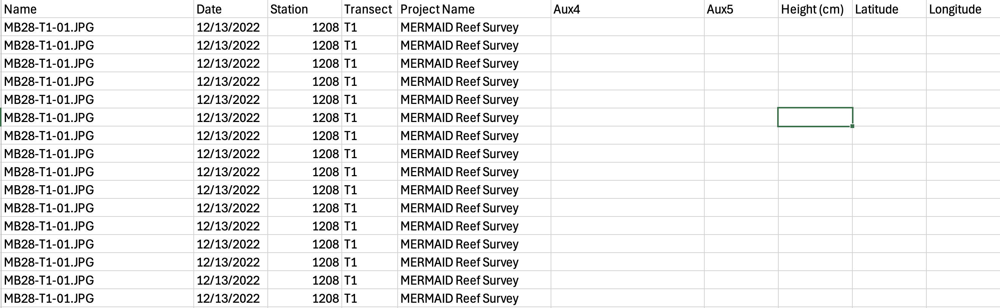
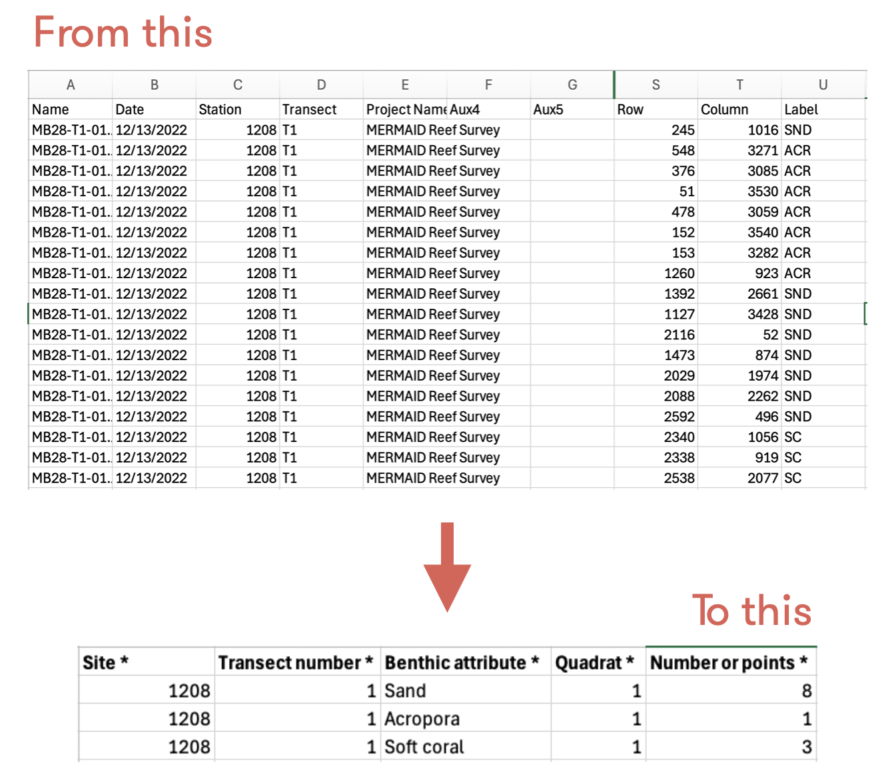

Import CoralNet data into MERMAID
Source:vignettes/articles/import_coralnet.Rmd
import_coralnet.RmdImport your CoralNet data to MERMAID
Do you have CoralNet data and want to import it to MERMAID?
You can import your CoralNet data using our MERMAID R package mermaidr. Follow our steps using our example data or use your own data. Learn more on how to import data to MERMAID in our Importing legacy data into MERMAID documentation.
Not familiar with R? use MERMAID Easy PQT instead.
Steps to import your CoralNet data to MERMAID are:
- Prepare your project in MERMAID Collect and ensure that you are an Admin of the project
- Prepare your CoralNet data and benthic attribute converter file in a CSV format
- Install and activate mermaidr and other related packages
- Download the MERMAID PQT template
- Prepare and reformat you data to match the MERMAID template
- Import your data to MERMAID
- Validate and submit in MERMAID Collect
Step 1. Prepare your project in MERMAID Collect
Before importing your CoralNet data to MERMAID, you need to set up your project in MERMAID Collect. If you are new to MERMAID, you need to create a MERMAID account before using it. You can use a new project or existing project in MERMAID Collect as long as you are an admin of the project. Setting up a new project requires internet access. To create a new project, click on the New Project button and then:
- add organization(s),
- add users,
- set data sharing permissions,
- add sites, and
- add management regimes.
Step 2. Prepare your CoralNet data and benthic attribute converter file in a CSV format
Prepare your CoralNet data
After you are done annotating your data in CoralNet, export it. To export your data from CoralNet:
Navigate to your CoralNet project > Images > Image Actions > Export Annotations, CSV
Include optional columns if you are using the auxiliary fields that CoralNet provide: Image metadata - date and auxiliary fields. Learn more about the auxiliary fields in the Calcification Metrics in CoralNet help page under the “Different table for different images” section.

Prepare the benthic attribute converter file
The benthic attribute converter file is a CSV file that contains your benthic labels and assign them to the correct MERMAID benthic attribute and/or growth forms. This file will be used to convert your labels to match the benthic attributes and/or growth forms accepted by MERMAID. You will only need to prepare it once then use this file everytime you want to import your CoralNet data to MERMAID.
The file consists of four columns:
Benthic_abb (your benthic labels)
Benthic category (what your benthic labels stand for)
Benthic attribute_MERMAID (what MERMAID benthic attribute it corresponds to), and
Growth form_MERMAID (what MERMAID growth form it corresponds to. This column can be left blank).

Step 3. Install and activate mermaidr and other related packages
After setting up your project in MERMAID Collect and preparing the
necessary files, you can now start importing your data in R or R Studio.
The first step is to install and activate the mermaidr and other related
packages. In this example, we will be using tidyverse.
Step 4. Download the MERMAID PQT template
Next step is to download the MERMAID Photo Quadrat Transect (PQT) template. Make sure to set up your working directory to point R to where your data is located and where you want to save your data from R, including the MERMAID PQT template.
To download the MERMAID PQT template:
- Get your MERMAID project using the
mermaid_get_my_projects()function from the mermaidr package. Omitinlcude_test_project = TRUEif it is not a test project.
project <- mermaid_get_my_projects(include_test_projects = TRUE)- Filter to select just the project you are working on, and rename the object.
Before running the code above, make sure that you change the project name “MERMAID reef survey” to your actual project that you want to import your data into.
- Get the import template and options using the
mermaid_import_get_template_and_options( )function.
pqt_template <- mermaid_import_get_template_and_options(
myproject,
"benthicpqt",
"benthicpqt_mermaidsurvey_template.xlsx"
)## ✔ Import template and field options written to benthicpqt_mermaidsurvey_template.xlsxStep 5. Prepare and reformat you data to match the MERMAID template
After downloading the MERMAID PQT template, you can start preparing and reformatting your data to match the template. Matching means that your data has the same column name and options accepted by the MERMAID template. Start by loading your data and the benthic attribute converter file. In this example, we will be loading three files:
CoralNet export data,
Metadata, and
Benthic attribute converter file.
raw <- read_csv2("CoralNet_export_data.csv")
metadata <- read_csv2("CoralNet_1208_site_metadata.csv")
ba_conv <- read_csv2("CoralNet_ba_converter.csv")If you are using a comma (“,”) to separate each data, use
read_csv() instead of read_csv2(). This
depends on your computer settings.
After loading the data, continue with cleaning the data. In this example, the cleaning data steps are:
- Keep only number for the
Transectcolumn
pqt <- raw
pqt <- pqt %>%
mutate(`Transect number *` = str_remove(Transect, "T"))- Add the
quadrat numbercolumn to the data
The code below will add the quadrat number column by
assigning the same number every 25 rows, where it increases every 25
rows and restart from 1 when a value in the Station and
Transect number * columns change. If you are using a
different number of points per quadrat, simply replace “25” in the code
with the actual number of points you are using in your method.
pqt <- pqt %>%
group_by(Station, `Transect number *`) %>%
mutate(`Quadrat *` = rep(1:(ceiling(n() / 25)), each = 25)[1:n()]) %>%
ungroup()- Summarize data per benthic attribut for each quadrat
In the MERMAID PQT template, you will find “Number of points *” column. This column must be filled with the total number of points for the same benthic attribute per quadrat. CoralNet provides data per point, meaning one point for one row, so you might have the same benthic attribute in multiple rows for one quadrat. This will be detected as a duplicate by MERMAID. Therefore, you need to combine the same benthic attribute for the same quadrat (see figure below).

pqt <- pqt %>%
group_by(`Project Name`, Station, `Transect number *`, `Quadrat *`, Label) %>%
summarise(
`Number of points *` = n(),
.groups = "drop"
)- Assign CoralNet labels to MERMAID benthic attributes and/or growth forms
You are going to use the benthic attribute converter
file to add the Benthic attribute * and
Growth form columns. This code will match
the label you used in your data with the label in the benthic attribute
converter file, then return with the benthic attribute and/or growth
form that are accepted by MERMAID.
pqt <- pqt %>%
left_join(
ba_conv %>%
select(Benthic_abb,
`Benthic attribute *` = `Benthic attribute_MERMAID`,
`Growth form` = `Growth form_MERMAID`
),
by = c("Label" = "Benthic_abb")
) %>%
relocate(`Benthic attribute *`, `Growth form`, .after = "Quadrat *")- Add metadata
Next step is to add the metadata to the data from the
metadata file based on the site name.
pqt <- pqt %>%
left_join(
metadata %>% select(
`Site *`, `Management *`, `Sample date: Year *`,
`Sample date: Month *`, `Sample date: Day *`, `Depth *`,
`Transect length surveyed *`, `Number of quadrats *`,
`Quadrat size *`, `Number of points per quadrat *`,
`Observer emails *`
),
by = c("Station" = "Site *")
)- Rename the columns to match the template
The headers of your data MUST be exactly the same with the MERMAID template. In this step you will:
- View the headers of the MERMAID template
names(pqt_template[["Template"]])## [1] "Site *" "Management *" "Sample date: Year *"
## [4] "Sample date: Month *" "Sample date: Day *" "Sample time"
## [7] "Depth *" "Transect number *" "Transect label"
## [10] "Transect length surveyed *" "Number of quadrats *" "Quadrat size *"
## [13] "First quadrat number" "Number of points per quadrat *" "Reef slope"
## [16] "Visibility" "Current" "Relative depth"
## [19] "Tide" "Sample unit notes" "Observer emails *"
## [22] "Quadrat *" "Benthic attribute *" "Growth form"
## [25] "Number of points *"- Rename the headers in your data to match the template. You could rearrange the columns in your data to match the template, but it will work either way. The code below will also keep only the columns that you need to import your data to MERMAID
pqt <- pqt %>%
select(
`Site *` = Station,
`Management *`,
`Sample date: Year *`,
`Sample date: Month *`,
`Sample date: Day *`,
`Depth *`,
`Transect number *`,
`Transect length surveyed *`,
`Number of quadrats *`,
`Quadrat size *`,
`Number of points per quadrat *`,
`Observer emails *`,
`Quadrat *`,
`Benthic attribute *`,
`Growth form`,
`Number of points *`
)Step 6. Import your data to MERMAID
Your data now matches the MERMAID template and is ready to be imported to your project in MERMAID Collect. The steps to import your data are:
- Validate your data to what you’ve set up in your project and options that MERMAID accepts. This is reflected in the MERMAID PQT template that you’ve downloaded
Use the mermaid_import_check_options() function to
validate each column of your data. This function will compare your data
with the MERMAID PQT template you’ve downloaded, which is based on what
you have set up in the project. If the data matches, a checkmark will
appear.
mermaid_import_check_options(pqt, pqt_template, "Site *")## ✔ All values of `Site *` match## # A tibble: 1 × 3
## data_value closest_choice match
## <chr> <chr> <lgl>
## 1 1208 1208 TRUE
mermaid_import_check_options(pqt, pqt_template, "Management *")## ✔ All values of `Management *` match## # A tibble: 1 × 3
## data_value closest_choice match
## <chr> <chr> <lgl>
## 1 Control Control TRUE
mermaid_import_check_options(pqt, pqt_template, "Sample date: Year *")## ✔ Any value is allowed for `Sample date: Year *` - no checking to be done
mermaid_import_check_options(pqt, pqt_template, "Sample date: Month *")## ✔ Any value is allowed for `Sample date: Month *` - no checking to be done
mermaid_import_check_options(pqt, pqt_template, "Sample date: Day *")## ✔ Any value is allowed for `Sample date: Day *` - no checking to be done
mermaid_import_check_options(pqt, pqt_template, "Depth *")## ✔ Any value is allowed for `Depth *` - no checking to be done
mermaid_import_check_options(pqt, pqt_template, "Transect number *")## ✔ Any value is allowed for `Transect number *` - no checking to be done
mermaid_import_check_options(pqt, pqt_template, "Transect length surveyed *")## ✔ Any value is allowed for `Transect length surveyed *` - no checking to be done
mermaid_import_check_options(pqt, pqt_template, "Number of quadrats *")## ✔ Any value is allowed for `Number of quadrats *` - no checking to be done
mermaid_import_check_options(pqt, pqt_template, "Quadrat size *")## ✔ Any value is allowed for `Quadrat size *` - no checking to be done
mermaid_import_check_options(pqt, pqt_template, "Number of points per quadrat *")## ✔ Any value is allowed for `Number of points per quadrat *` - no checking to be done
mermaid_import_check_options(pqt, pqt_template, "Observer emails *")## ✔ All values of `Observer emails *` match## # A tibble: 1 × 3
## data_value closest_choice match
## <chr> <chr> <lgl>
## 1 amkieltiela@datamermaid.org amkieltiela@datamermaid.org TRUE
mermaid_import_check_options(pqt, pqt_template, "Quadrat *")## ✔ Any value is allowed for `Quadrat *` - no checking to be done
mermaid_import_check_options(pqt, pqt_template, "Benthic attribute *")## ✔ All values of `Benthic attribute *` match## # A tibble: 107 × 3
## data_value closest_choice match
## <chr> <chr> <lgl>
## 1 Crustose coralline algae Crustose coralline algae TRUE
## 2 Soft coral Soft coral TRUE
## 3 Sand Sand TRUE
## 4 Acropora Acropora TRUE
## 5 Porites Porites TRUE
## 6 Macroalgae Macroalgae TRUE
## 7 Other invertebrates Other invertebrates TRUE
## 8 Seagrass Seagrass TRUE
## 9 Sponge Sponge TRUE
## 10 Zoanthid Zoanthid TRUE
## # ℹ 97 more rows
mermaid_import_check_options(pqt, pqt_template, "Growth form")## ✔ All values of `Growth form` match## # A tibble: 2 × 3
## data_value closest_choice match
## <chr> <chr> <lgl>
## 1 Branching Branching TRUE
## 2 Massive Massive TRUE
mermaid_import_check_options(pqt, pqt_template, "Number of points *")## ✔ Any value is allowed for `Number of points *` - no checking to be done- Address issues, if any
If there’s an issue in your data, MERMAID will mark the issue with a FALSE note under the “match” column and provide the closest choice to help us address the issue(s). Issues must be addressed to be able to upload the data, except for non-mandatory fields. Non-mandatory fields can be left blank or removed entirely from the data frame.
In this example, you will find blank growth form(s), because not all
benthic attributes have growth forms. Although you received a red dot
and a message saying,
some errors in values of 'Growth form' - please check table below,
it is okay to leave it as is. You can still import your data to
MERMAID.
- Recheck the data one more time by doing a dry run
After validating and addressing all the issues, you need to perform a
dry run check one last time using the
mermaid_import_project_data() function and set
dryrun = TRUE.
mermaid_import_project_data(
pqt,
myproject,
method = "benthicpqt",
dryrun = TRUE
)## Records successfully checked! To import, please run the function again with `dryrun = FALSE`.- Import your data to MERMAID
Once you get the message Records successfully checked!, change the dryrun option to FALSE to start importing your data to MERMAID.
mermaid_import_project_data(
pqt,
myproject,
method = "benthicpqt",
dryrun = FALSE
)## Records successfully imported! Please review in Collect.You can save your clean data as a CSV file using the code below:
write_csv(pqt, "pqt_mermaidreefsurvey.csv")Step 7. Validate and submit you data in MERMAID Collect
After you get the message Record successfully imported! Please review in Collect, head to your Collecting Page in your project in the MERMAID Collect. Continue with validating and submitting each transect.
Congratulations! You have successfully imported your CoralNet data to MERMAID!